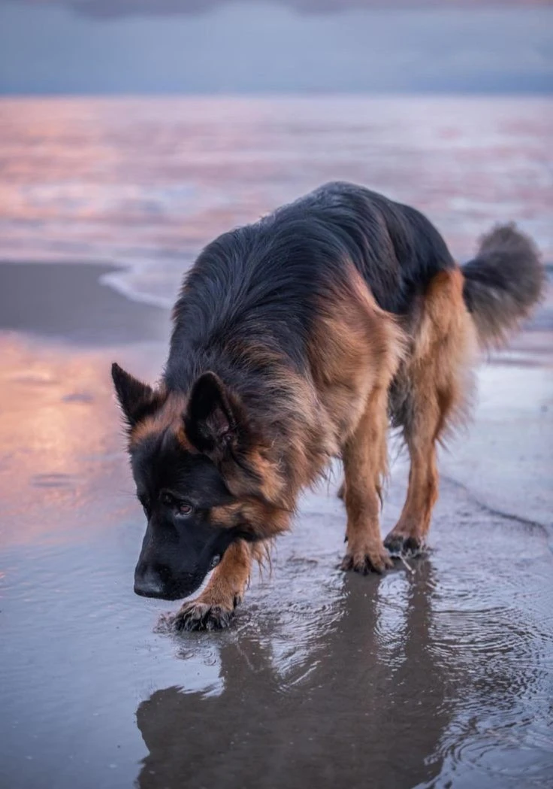
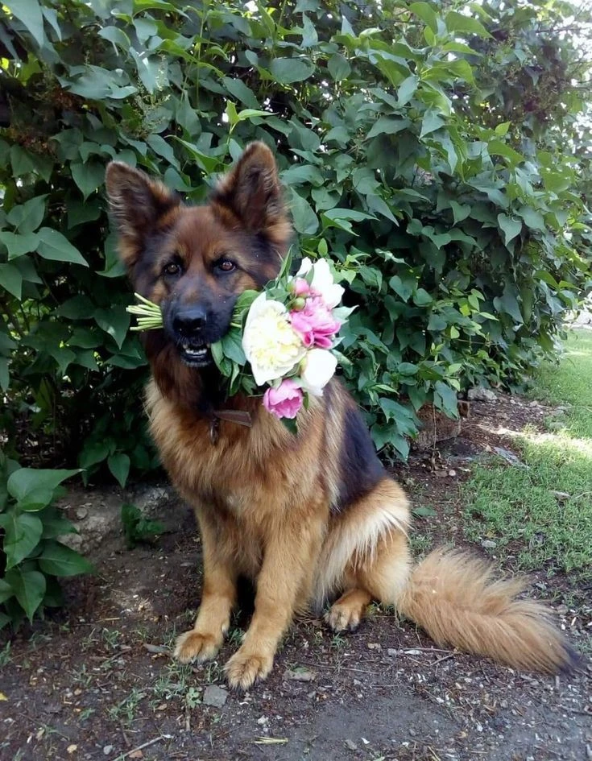

Німецька вівчарка


Опис
Великий собака з міцним скелетом і розвиненою мускулистою статурою. У них широкі потужні груди, трохи занижений таз і легковпізнавана стійка. Кінцівки у них довгі, рівні та міцні, а хвіст прямої та шаблевидної форми. Шкіра щільно обтягує корпус собаки, тому жодної складочки не утворюється. Голова вівчарки клиноподібна, вуха великі, стоячі, злегка загострені на кінчиках.
Шерсть у німецької вівчарки коротка, густа, з розвиненим підшерстком, що дозволяє переносити навіть морози. Забарвлення зустрічаються різні: і чорний, і сірий, але найпоширеніший - чепрачний (класичне для цієї породи поєднання чорного з підпалом).
Дуже рідко буває біле забарвлення – деякі виділяють таких вівчарок в окрему «американську» породу, але офіційно вони не визнані.
Характер
Німецька вівчарка дуже прив'язується до свого власника і захоче бути з ним/нею якомога більше. Хоча цій породі і потрібно приділяти багато уваги, пес віддячить вірністю та своєю непідкупною охороною. З іншого боку, якщо ви не знайдете часу на соціалізацію та дресирування вівчарки, виникнуть проблеми із впевненістю у собі та непокірністю. Цей собака прагне вчитися і дуже легко піддається дресируванню, тому він має бути слухняним учнем на тренуваннях.
Походження
Країна походження: Німеччина
Німецька вівчарка — результат схрещування різних порід вівчарок — спочатку була виведена для пасіння і дата її появи сходить ще до VII століття. Німецьких вівчарок вперше показали на виставці у 1882 році, а в 1899 році був створений Verein fur Deutsche Schaferhunde, тобто Німецький клуб цієї породи. Саме завдяки цьому клубу німецьких вівчарок стали використовувати в поліції та збройних силах, тим самим врятувавши породу від вимирання у важкі часи на початку XX століття. Під час Першої світової війни німецьки вівчарки носили на фронті послання та допомагали знаходити поранених. Солдати союзників були у захваті від розуму та мужності собак і привезли багатьох з них додому після війни, тим самим закріпивши породу в інших країнах.